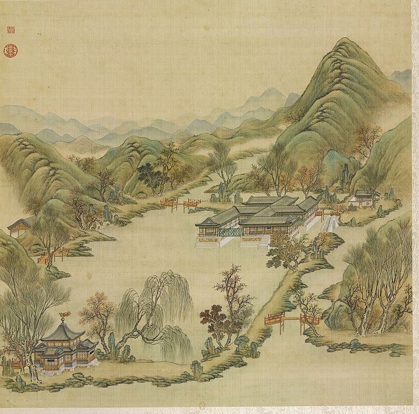

万方安和


概况
万方安和位于杏花春馆西北，建于湖中，平面呈“卍”字形（S05 j81:9a；E1447），至迟建于雍正五年（1727）（E1451；S310）。卍字各臂皆有题名的房间，向阳正室在东南（E1442）。乾隆帝说此处“冬燠夏爽”，是其父雍正帝喜居之所（E1441）。马龙（Malone）记其建于砖石基座上，四面环水，湖南端另有一座较小的十字形建筑（E1450）。东北有桥通平安院，南岸有重檐十字亭（E1451）。1860年10月18日至19日英军焚园时被毁（E0485）。
1744年四十景图及御制诗序
《圆明园四十景图》第十三幅（P0013）。乾隆帝诗序说：“水心架搆形作卍字畧彴相通”，遥望对岸奇花如锦绣；秋夜月下，“此百尺地寜非佛胸涌出寳光耶”。注中说雍正帝喜居于此，冬暖夏凉（S40；E1441）。
1860年以前的变化
In 1764 Qianlong wrote nine poems on the four-character plaques, all in Yongzheng's hand, and his preface says the gallery runs round every side and each turn gives a different view (S05 j81:10a-12a; E1442). The 日下旧闻考 note reads the plaques arm by arm (S05 j81:9a-9b; E1447), which places each room on its arm: south main room 万方安和; east-west inner rooms 对溪山, 佳气迎人; centre 四方宁静; west 观妙音, 枕流漱石, 洞天深处; east 安然, 一炉香, 碧溪一带, 山水清音; north 涤尘心, 神洲三岛, 高山流水, all in Yongzheng's hand; on the west wing of the south arm 凝神, 静寄, and on the east 澄观, in Qianlong's hand. 端木泓 Duanmu Hong, in an article seen only as an abstract, reads the whole as a Buddhist cosmic diagram, with the 十字亭 and the long hall of 山高水长 as answering strokes (S357; E1453): an interpretation, not evidence.
The one plan found is 样053-1-2, 万方安和地盘全样 (NLC, 1650x744 mm, ink, light colour, red and yellow slips, paste-overs, presentation sheet, 乾嘉时期; E1456; S310 rec. 7980): earlier than 1860 by decades. The Palace Museum card model (烫样) of 万方安和殿, shown in Hong Kong in 2024, is reported to be of the Tongzhi repair (S326, search extract; S261; S920): a design of 1873-74, not the hall of 1860. The mhymy record calls the building 万字房 and says it stood by 雍正五年 (1727) (S310 rec. 7980).
逐座建筑
| 建筑 | 开间 | 屋顶 | 层数 | 朝向 | 来源 |
|---|---|---|---|---|---|
| 万方安和 南面正室 Wanfang Anhe zhengshi | each wing about 5-7 bays on the front seen (uncertain) | each wing 歇山 hip-gable at its free end, single eaves, ridges reading as rolled; wings meet in valleys | 1 | S (the wing seen frontally) | S01, S05, S08, S360 |
| 佳气迎人 Jiaqi Yingren | S05 | ||||
| 四方宁静 Sifang Ningjing | S05 | ||||
| 碧溪一带 Bixi Yidai | E | S05 | |||
| 山水清音 Shanshui Qingyin | E | S05 | |||
| 神洲三岛 Shenzhou Sandao | 1 with a loft inside | N | S05 | ||
| 高山流水 Gaoshan Liushui | N | S05 | |||
| 枕流漱石 Zhenliu Shushi | W | S05 | |||
| 洞天深处 Dongtian Shenchu | W | S05 | |||
| 十字亭 Shizi Ting | 1 with four projecting arms | a high central roof with gilt finial over four gabled arms (cross plan), i.e. two levels of eaves | 1 (two eaves) | S01, S02, S06, S08 |
另有1座地盘图上未注名称的建筑
图像
1745年木刻

1750至1792年水粉

1887年石印本

今日

其他图像

版权所限，请至收藏方查看
- Sirén, Enligt text under Pl. 182 Kinas trädgårdar Vol. I: Yuanmingyuan. Wan Fan An He, ”Fred och Harmoni överallt.” En b 查看： kulturarvsdata.se
室内
Centre couplet (Qianlong): "四海昇平承帝眷 萬幾兢業亮天工" (S05 j81:9b; E1447). The poems give room features: the centre room square with galleries on all four sides ("四面尽通廊，中间正且方", E1462); the north room 神洲三岛 has a loft inside ("室中亦有楼", E1466); 高山流水 has a spring led in and rocks piled ("疏泉还叠石", E1467); 碧溪一带 looks east down a long stream with mist entering the low windows (E1463). 佳气迎人 is reached turning west then north to the middle ("向西旋转北，步近室之中", E1460).
园林环境
Built in open water, joined to the shores by plank bridges (E1441); a brick and stone base (S02 p.81; E1450). Reed islets and willow dykes in the poems ("秋月芦花渚，春风柳线隄", E1463). Flowers on the far bank (E1441). A cross-shaped pavilion on the south shore (E1450, E1451).
P0013 shows the swastika building in the lake on high white stone bases with ochre inset panels and steps to the water, grey 歇山 roofs on each wing, red-brown columns, a white arched bridge at its east end and timber bridges with red railings elsewhere; a cross-plan pavilion with a gilt finial stands on the south-west shore. The 卍 plan is only partly legible from this angle; the woodcut P0096 shows how the wings meet. Autumn trees. (S08 P0013, crop ym13_c1; S76 P0096)
现存
卍字形台基仍立于水中，经过修整：各臂为同一高度、石砌边缘的铺装平台，臂间有水道（P0381）。2003年发掘在西岸发现原有的石砌“响水”水槽，样式雷图上此处注有“响水”；此后水景修复重新放水，规模小于图样所示（S944）。
考古与勘测
- 2003, (not named in S944; the park's restoration works)
The 2003 dig at 万方安和 found the original stone intake trough of the 响水 'sounding water' cascade on the west shore by the 卍-shaped hall, where a Yangshi Lei drawing writes 响水; the cascade was then repaired and set running again.
他人的复原
现代诠释，不是证据，本项目不据以定尺寸或位置。


- 万字房的“前世”与“重生”, 梦回圆明园 (梦回圆明园, paper figure) 查看： mhymy.com
- [央美]万方安和复原视频 (吴晓敏, 陈东, per mhymy xsjl 14213 as summarised in a search extract, video) 查看： mhymy.com
- Early student 3D model of 万方安和 (students of 郭黛姮, 3D model) 查看： tsinghua.edu.cn
- 万方安和, image 753 in a gallery (, render) 查看： thepaper.cn
- Constructive analysis and digital 3D reconstruction of the Yuanmingyuan Ruins: Wanfanganhe Pavilion (Virtual Archaeology 查看： polipapers.upv.es
- Fig. 12, viewing line and position, Beihai reference, ornamental effect at Wanfang Anhe (Xinchen Li, Xiaoxiao He, Yuqing 查看： nature.com
- Fig. 5, Viewing angle and viewing distance of Wanfang Anhe Rockery (Xinchen Li, Xiaoxiao He, Yuqing Xiao, Shizhen Jia, K 查看： nature.com
- 样式雷烫样 Yangshi Lei card models of Yuanmingyuan: 泉石自娱, 同乐堂, 上下天光, 思顺堂, 天地一家春, 恒春堂, 课农轩, 廓然大公, 勤政殿, 万方安和 (雷氏 Lei family hol 查看： thepaper.cn
已知尺寸
| 部位 | 项目 | 尺寸 | 方法 | 等级 | 来源 |
|---|---|---|---|---|---|
| the scene's outline on the plan | Extent, long side | 81 m ± 10 | b 地盘图或遗址 | C | S01, layers/scenes_1860, UTM 50N, minimum rotated rectangle |
| the scene's outline on the plan | Extent, short side | 55 m ± 10 | b 地盘图或遗址 | C | S01, layers/scenes_1860, UTM 50N, minimum rotated rectangle |
| the scene's outline on the plan | Area | 3000 m² ± 300 | b 地盘图或遗址 | C | S01, layers/scenes_1860, UTM 50N, polygon area |
全部7个数字
| 部位 | 项目 | 尺寸 | 方法 | 等级 | 来源 |
|---|---|---|---|---|---|
| the 卍 building | Overall extent | 32 m ± 10 | a 测绘或清代图档 | C | S40, S05 j81:9b (E1441) |
| 响水 cascade west of the 万字房, as restored today | Cascade length ns | 9.743 m ± 0.05 | a 测绘或清代图档 | B | S944, section 3, para. on LIDAR360 measurements, table 3 |
| 响水 cascade, as restored | Cascade width ew | 6.828 m ± 0.05 | a 测绘或清代图档 | B | S944, section 3 |
| water inside the scene's outline | Water inside the outline | 570 m² ± 60 | b 地盘图或遗址 | B | S01, layers/water_1860 within layers/scenes_1860 |
本页引用的资料 (14)
- S01 Plan of the Yuanmingyuan Imperial Garden-Palace, unknown artist, three hanging scrolls, ink and colour on paper, 177 × 253 cm together
- S02 Carroll Brown Malone, History of the Peking Summer Palaces under the Ch'ing Dynasty, Illinois Studies in the Social Sciences XIX, Urbana 1934; reprint Paragon 1966
- S05 《日下旧闻考》 Rixia jiuwen kao (Yu Minzhong et al.), juan 80-85 (Round 20 also juan 76-79, 84-87 and 98-100: the gardens round ours, the roads, 郊坰), Kanripo KR2k0036, WYG base
- S06 zh.wikipedia 圆明园, 圆明园四十景, 长春园, 绮春园, 西洋楼
- S08 圆明园四十景图 Forty Scenes album, Tangdai and Shen Yuan, 40 leaves, BnF Estampes RESERVE FT 6-B-9, one BnF record per leaf; poems Qianlong, calligraphy Wang Youdun
- S40 御制圆明园四十景诗 / 图咏
- S76 Différents palais et temples, BnF cb403581603, woodcuts after Sun Hu, Shen Yuan
- S261 Hong Kong Palace Museum, The Hong Kong Jockey Club Series: Yuan Ming Yuan: Art and Culture of an Imperial Garden-Palace, exhibition page, 2024
- S310 梦回圆明园 mhymy.com, 档案史料 > 样式雷图档 /dasl/ysltd/: per-drawing records (图名, 图幅, 款式, 图纸性质, 绘制年代, 收藏机构, 排架编码) with a description, for drawings held by NLC 国家图书馆善本部, 故宫博物院图书馆, 清华大学
- S326 澎湃新闻 report on an exhibition of Palace Museum 烫样, including 九洲清晏殿 and 万方安和殿
- S357 端木泓, 圆明园新证一万方安和考 (abstract page of a PDF
- S360 圆明园管理处 (attachment on the park's site), 圆明园百景史事分景汇编: dated records and imperial poems scene by scene, compiled from the Veritable Records and the emperors' collected poem
- S920 澎湃新闻 The Paper, 揭秘故宫"营缮之道"：样式雷烫样与单士元彩绘 (report on the Palace Museum exhibition 营缮之道：紫禁城的营造与保护)
- S944 李昕宸, 肖雨晴, 张志国 (圆明园管理处), 秦柯 (中国农业大学 园艺学院), 《圆明园响水景观数字化构建——以万方安和水景为例》, 《圆明园研究》 91期, on the park site